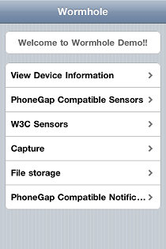
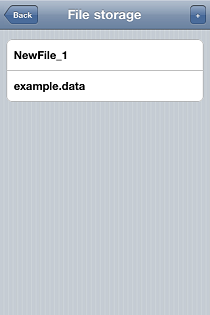

WormholeDemo
This example application demonstrates the MoSync Wormhole JavaScript Library, in particular its support for native UI, sensors, capture, and file storage.
|  |  |
| Main screen on iOS | File storage screen on iOS |
This example is included in the MoSync SDK installation in the /examples folder. For information on importing the examples into your workspace, see Importing the Examples.
This application should run on all platforms supported by the MoSync Wormhole JavaScript Library, although some features may not be supported on all platforms (see Feature/Platform Support). Interface for functionality not supported by a device will still be present, but not functioning. On Android, screen animations have been disabled to avoid potential JQTouch bugs.
Behaviour
When started the main screen of the application provides access to the following screens:
- View Device Information: Displays information about the device (platform, version and device name)
- PhoneGap Sensors: Allows you to use the device’s sensors exposed through the PhoneGap-compliant Wormhole API functions (Accelerometer,GeoLocation, Compass). Some devices might not support all sensors.
- W3C Sensors: Allows you to use the device’s sensors exposed through the Wormhole Sensor API (Accelerometer, Magnetic Field, Orientation, Proximity, Gyroscope). Some devices might not support all sensors.
- Capture: Lets you capture and display videos and pictures using PhoneGap-compliant Capture API. For video playback, the HTML5 <Video> tag is used, which might not be supported in all devices.
- File storage: This panel presents you with a list of files in a local folder. You can add more files to this folder by tapping the “+” button on the top right. Tapping a file will open a new panel which allows you to rename, edit it’s contents, or delete it. After changing the contents of an edit box in the file editing panel, you must explicitly tell the application to update the file by tapping the “Rename” or “Save” buttons
- Phonegap Compatible Notifications: Presents two ways to provide feedback to the user: a short beep, or a vibration.
In the code
The program is split into the following files:
- main.cpp: The only file which contains C++ code. It initializes and passes messages to the Wormhole libraries (Phonegap etc).
- LocalFiles/index.html: The interface specification file used by the application. Contains information about the layout of all panels, as well as some initialization code.
- LocalFiles/main.js: Contains most of the implementation of the application’s functions.
- LocalFiles/phonegapSensors.h: Contains the function implementations of the PhoneGap Sensors panel.
- LocalFiles/w3csensors.js: Contains the function implementations of the W3C Sensor panel.
- LocalFiles/filemanager.js: Contains the function implementations of the File Storage panel.
In addition, the application links to the Wormhole C++ libraries, and for creating the interface it uses the jQTouch Javascript library.